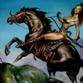

Амазонки, в грецькій міфології плем'я жінок-войовниць, які ведуть свій рід від бога війни Ареса і наяди Гармонії. Мешкали вони в Малій Азії або в передгір'ях Кавказу. Вважається, що їх назва походить від назви звичаю випалювати у дівчаток ліву груди для більш зручного володіння бойовим цибулею. Стародавні греки вірили, що ці люті красуні в певну пору року вступали в шлюб з чоловіками з інших племен. Народжених хлопчиків вони віддавали батькам чи вбивали, а дівчаток виховували в войовничому дусі.
Під час Троянської війни амазонки боролися на боці троянців, тому сміливець Ахілл, грек, перемігши в сутичці їх царицю Пенфісілею, завзято спростовував чутки про любовний зв'язок з нею. Статні войовниці залучали не одного Ахілла. У битвах з амазонками брали участь Геракл і Тесей, який викрав царицю амазонок Антіопу, одружився на ній і з її допомогою відбив вторгнення дев-войовниць в Аттику.
Один з дванадцяти знаменитих подвигів Геракла полягав у викраденні чарівного пояса цариці амазонок, красуні Іполіти, що зажадало від героя чималого самовладання. Амазономахия - битва грецьких героїв (Беллерофонта, Геракла, Тесея, Ахілла) і амазонок. Популярний сюжет в грецькому мистецтві і в живопису в епоху бароко і класицизму.